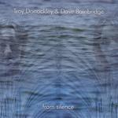

Home Artist links Label link

Troy Donockley and Dave Bainbridge - From Silence
| Artist: | Troy Donockley and Dave Bainbridge |
| Title: | From Silence |
| Label: | Open Sky OPENVP5CD |
| Length(s): | 60 minutes |
| Year(s) of release: | 2005 |
| Month of review: | [12/2005] |
Line up
Troy Donockley - low whistle, tin whistle, uileann pipes, vocals, acoustic guitar
Dave Bainbridge - keyboards, electric guitar, bouzouki
Tracks
| 1) | From Silence: Part 1 | 9.45
|
| 2) | From Silence: Part 2 | 6.15
|
| 3) | From Silence: Part 3 | 15.51
|
| 4) | From Silence: Part 4 | 9.04
|
| 5) | From Silence: Part 5 | 9.43
|
| 6) | From Silence: Part 6 | 5.34
|
Summary
Two members of Iona getting together in a cathedral improvising
an hour full at the instigation of Voiceprint's Bob Ayling.
The recording is a binaural one which makes headphones an important
part of your listening experience.
The music
The album falls apart into six parts, and based on the first part you will
know what to expect: this is a serene type of music, with the whistles
of Troy being at first glance the more dominant part. The music of Iona
(and bands related to it musicwise, such as Clannad) contains elements of this,
but usually the band setting contains a lot more.
I am reminded of the music of Jon Hassell (with whistle instead of trumpet),
but I can also imagine people calling this type of music New Age.
Of course, New Age has negative connotations and that I do not mean to imply.
The serenity is real, and knowing something of these artists, I think everybody
will agree that there is no marketing involved here, no hype, no sell-out.
In between all the whistle work (which I would tend to describe as flute, if
the listing did not tell me differently), Bainbridge fills in the backdrop
using keyboards and some electric guitar, but never overt, no soloing or anything.
Part two opens more piano like. Then the flute sets in, and its very plaintive,
in fact, sometimes it gets to be quite high and sharp. You also get the feeling
that Troy is walking around in that cathedral where they are recording it,
whistling right into your ear. The music is melodic, but in a meandering way.
I tend to comapre this album with Gandalf's More Than Just A Seagull although
there the acoustic guitar is way more prominent and the bounce of that is even
more restful. I have to admit that Troy's wind work can be quite
an earcatcher at times. Troy also seems more dominant. And still, I like
the music most when Dave sets in too, for instance in the very sad first half
of Part 3. Especially when the synths set in more, I am reminded of the
New Agey side of another album by Gandalf: From Source To Sea.
With Part 4 the acoustic guitar is the new element. The link to Gandalf's
More Than Just A Seagull is quite a bit stronger here. Towards the end, the song
becomes more folky, more up-beat, but only a bit. Part 5 has a rather
percussive feel, evoked by the bouzouki (I think it is), while there is also
a certain Orientalness about the melodies here. Then the music becomes more
orchestral as the synths come in again. The synths grow even quite strong here,
but these are minor 'humps'.
The final track is the shortesty and is dominated by acoustic guitar with a layer
of synths underneath.
Conclusion
A serene album that can work wonders in the late hours when you are
actually trying to relax from all that air guitaring and tapping out
a 9/13th measure for hours on end. Comparisons can be made to the
soft instrumental side of Iona (without the rest), but also to
Gandalf's More Than Just A Seagull, Paul Horn or Jon Hassell. Music of integrity, but
do not expect song structures, or catchy concise melodies. The beauty of it can only
lie in the moment: in the moods that are evoked, and the sounds that are produced.
© Jurriaan Hage